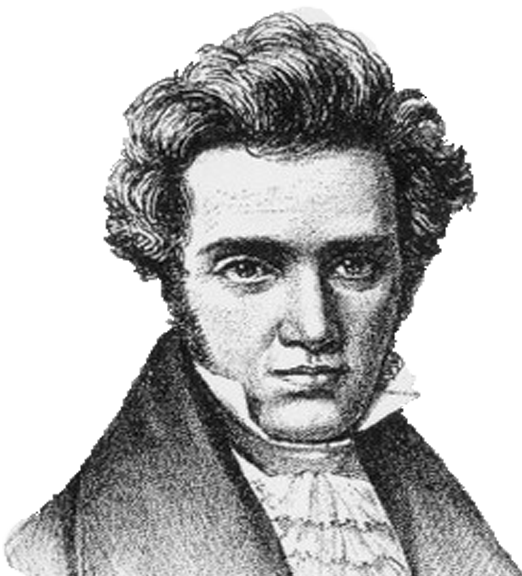

Цитати відомих людей
„Я мчу туди, де шайба буде, а не туди, де вона була“
„Падіння людини можливо лише з висоти, і саме падіння людини є знак її величі“
„Цікавий парадокс полягає в тому, що, коли я сприймаю самого себе таким, який я є, я набуваю
можливість змінитися“
„Людина може стати людиною тільки шляхом виховання. Вона - то, що робить з неї виховання“
„Люди ніколи не користуються свободою, яка у них є, але вимагають тієї, якої у них немає: у них є
свобода думки, вони ж вимагають свободи висловлюватись“

„Найбільшим зловживанням грішми є те, що за них можна купити політичну владу“
„Людина може робити те, що вона бажає, але не може бажати, що їй бажати.“
„Завдання життя не в тому, щоб бути на боці більшості, а в тому, щоб жити згідно з внутрішнім,
усвідомленням тобою закону.“
„Не роби нічого ганебного, ні в присутності інших, ні таємно. Першим твоїм законом має бути повага
до себе самого“

„Дурня можна пізнати за двома ознаками: він багато говорить про речі, для нього непотрібних, і
висловлюється про те, про що його не питають.“

„Іронія відрізняється більш шляхетним характером, ніж блазнювання, тому що в першому випадку людина
вдається до жарту заради самого себе, а блазень робить це заради інших.“
„Невігластво робить людей сміливими, а роздуми - нерішучими.“
„Кожен чує лише те, що він розуміє“
„Прекрасне осягається шляхом вивчення і великих зусиль, погане засвоюється само собою, без праці“
„Я не вірю в колективну мудрість неосвічених індивідуумів“